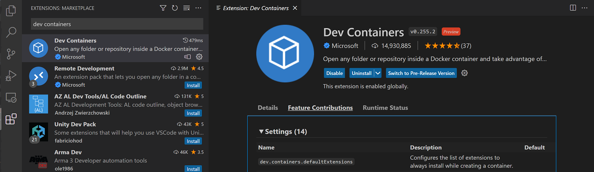

Remote Development FAQ
This article covers frequently asked questions for each of the Visual Studio Code Remote Development extensions. See the SSH, Containers, and WSL articles for more details on setting up and working with each of their respective capabilities. Or try the introductory Tutorials to help get you running quickly in a remote environment.
For questions about GitHub Codespaces, see the GitHub Codespaces documentation.
General
What is Visual Studio Code Remote Development?
The Visual Studio Code Remote Development extension pack allows you to open any folder in a container, on a remote machine (via SSH), or in the Windows Subsystem for Linux and take advantage of VS Code's full feature set. This means that VS Code can provide a local-quality development experience — including full IntelliSense (completions), debugging, and more — regardless of where your code is located or hosted.
What advantages does VS Code Remote Development provide over local editing?
Some benefits of remote development include:
- Being able to edit, build, or debug on a different OS than you are running locally.
- Being able to develop in an environment that matches the target deployment environment.
- Using larger or more specialized hardware than your local machine for development.
- The ability to edit code stored in another location, such as in the cloud or at a customer site.
- Separating developer environments to avoid conflicts, improve security, and speed up on-boarding.
Compared to using a network share or synchronizing files, VS Code Remote Development provides dramatically better performance along with better control over your development environment and tools.
How do the Remote Development extensions relate to GitHub Codespaces?
GitHub Codespaces is a service that provides managed cloud-hosted development environments accessible from both VS Code and a new browser-based editor. The service also allows VS Code and the browser-based editor to access self-hosted environments (desktop or server) without requiring an SSH server or even a direct network route. You can read more in the GitHub Codespaces documentation.
While the Remote Development and Codespaces extensions share technology and features, the Remote Development extensions are released separately and can operate independently from GitHub Codespaces.
How do the Remote Development extensions work?
Visual Studio Code Remote Development allows your local VS Code installation to transparently interact with source code and runtime environments on other machines (whether virtual or physical) by moving the execution of certain commands to a "remote server". The VS Code Server is quickly installed by VS Code when you connect to a remote endpoint and can host extensions that interact directly with the remote workspace, machine, and file system.

See Supporting Remote Development for additional details about extensions.
How do the Remote Development extensions secure access to a remote machine, VM, or container?
Visual Studio Code Remote Development uses existing, well known transports like secure shell to authenticate and secure traffic. No ports need to be publicly opened beyond those used by these well-known, secure transports.
The VS Code Server that is injected runs as the same user you used to sign in to the machine, ensuring that VS Code and its extensions are not given improper elevated access without permission. The server is started and stopped by VS Code and is not wired into any user or global login or startup scripts. VS Code manages the server's lifecycle so you do not need to worry about whether or not it is running.
Can VS Code Server be installed or used on its own?
No. The VS Code Server is a component of the Remote Development extensions and is managed by a VS Code client. It is installed and updated automatically by VS Code when it connects to an endpoint and if installed separately could become quickly out of date. It is not intended or licensed for use by other clients.
What are the connectivity requirements for VS Code Server?
Installation of VS Code Server requires that your local machine have outbound HTTPS (port 443) connectivity to:
update.code.visualstudio.com*.vo.msecnd.net(Azure CDN)
By default, the Remote - SSH will attempt to download on the remote host, but if you enable remote.SSH.allowLocalServerDownload, the extension will fall back to downloading VS Code Server locally and transferring it remotely once a connection is established.
The Dev Containers extension always downloads locally and transfers into the container.
You can install extensions manually without an internet connection using the Extensions: Install from VSIX... command, but if you use the extension panel or devcontainer.json to install extensions, your local machine and VS Code Server will need outbound HTTPS (port 443) access to:
marketplace.visualstudio.comvscode.blob.core.windows.net*.vo.msecnd.net(Azure CDN)*.gallerycdn.vsassets.io(Azure CDN)
Finally, some extensions (like C#) download secondary dependencies from download.microsoft.com or download.visualstudio.microsoft.com. Others (like Visual Studio Live Share) may have additional connectivity requirements. Consult the extension's documentation for details if you run into trouble.
All other communication between the server and the VS Code client is accomplished through the following transport channels depending on the extension:
- SSH: An authenticated, secure SSH tunnel.
- Containers: Docker's configured communication channel (via
docker exec). - WSL: A random local port.
You can find a list of locations VS Code itself needs access to in the network connections article.
Why can't I see my local containers in the Docker extension when using the Remote - extensions?
By default, the Docker extension will run remotely. While this is a sensible default in some cases, it means the extension may not show local containers when VS Code is connected to a remote SSH host, container, or WSL.
You can use one of the following solutions to resolve this problem:
-
Open a new local window (File > New Window) and use it to work with local containers.
-
Install the Dev Containers extension and use the Remote Explorer in situations when you need to see your local containers.
-
WSL only: Use the Docker Technical Preview for WSL 2 or configure Docker Desktop for use in WSL 1.
-
Dev Containers only: Forward the Docker socket and install the Docker CLI (only) in the container.
-
Use the extensionKind property to force the extension to be
ui. However, this will prevent some commands from working.
What Linux packages or libraries need to be installed on a host to use Remote Development?
Remote Development requires kernel >= 3.10, glibc >=2.17, and libstdc++ >= 3.4.18. Recent x86_64 glibc-based distributions have the best support, but exact requirements can vary by distribution.
Support for musl-based Alpine Linux is available for the Dev Containers and WSL extensions and ARMv7l (AArch32) / ARMv8l (AArch64) is available in Remote - SSH. However, native dependencies in certain extensions may cause them not to function on non-x86_64 glibc distributions. Note that experimental ARMv8l (AArch64) is available in VS Code Insiders only.
See Remote Development with Linux for additional details.
Can I install individual extensions instead of the extension pack?
Yes. The Remote Development extension pack provides a convenient way for you to access all of the latest remote capabilities as they are released. However, you can always install the individual extensions from the Marketplace or VS Code Extensions view.
How can I review and configure extension settings?
As with other parts of Visual Studio Code, you can customize each of the Remote Development extensions through their settings. Using Dev Containers as an example, you may review a list of all Dev Containers settings by opening the extension in the Extensions view (⇧⌘X (Windows, Linux Ctrl+Shift+X)), and navigating to Feature Contributions:

WSL
What is the advantage of the extension over using WSL as the terminal?
You can think of WSL as a Linux machine running on Windows, where you can install Linux specific frameworks/tools (for example Python, Go, Rust, etc.) without impacting your Windows setup. You can then use VS Code and the WSL extension to develop in the context of what is installed in WSL, isolated from what is installed on Windows.
For example, you might install the Go stack in WSL (compiler, debugger, linters, etc.). If you run VS Code only on Windows, you must also install the same Go stack there to get features like smart completions, debugging, Go to Definition navigation. And because the language services are running on Windows, they don’t know what is in WSL.
It’s true that you can run binaries in WSL from Windows and vice-versa, but regular VS Code extensions don’t know how to do this. This is how we started out supporting debugging in WSL, but quickly realized we would have to update all extensions to know about WSL.
We decided instead to make parts of VS Code run in WSL and let the UI running on Windows talk to the VS Code server running in WSL. This is what the WSL extension enables and with it, the Go extension runs in WSL along with the rest of the Go tools (compiler, debugger, linters), while VS Code runs on Windows.
With this approach, language features like smart completions just work against what is in WSL without having to set up anything on Windows. You don't have to worry about path issues or set up different versions of development stacks on Windows. If you are deploying applications to Linux, you can set up your WSL instances to look like your runtime environment while still getting a rich editing experience on Windows.
Extensions authors
As an extension author, what do I need to do?
The VS Code extension API abstracts away local/remote details so most extensions will work without modification. However, given extensions can use any node module or runtime they want, there are situations where adjustments may need to be made. We recommend you should test your extension (particularly in a container) to be sure that no updates are required. See Supporting Remote Development for details.
Can an extension access local resources or APIs when a user is connected remotely?
When VS Code connects to a remote environment, extensions are classified as either UI or Workspace extensions. UI Extensions run in a local extension host, can contribute UI or personalization features (for example themes), and have access to local files or APIs. Workspace extensions run in a remote extension host with the workspace and have full access to the source code, remote filesystem, and remote APIs. While Workspace extensions do not focus on UI customization, they can contribute explorers, views, and other UI elements as well.
When a user installs an extension, VS Code attempts to infer the correct location and install it based on its type. Extensions that do not need to run remotely like themes and other UI customizations are automatically installed on the UI side. All others are treated as Workspace extensions since they are the most full-featured. However, extension authors can also override this location with an extensionKind property in package.json.
If your extension is not functioning as expected, there are steps to check if it is running in the correct location or should perhaps have a different extensionKind. Also see Supporting Remote Development for additional details on what extension authors need to know about Remote Development and Codespaces.
License and privacy
Location
You can find the licenses for the VS Code Remote Development extensions here:
Why aren't the Remote Development extensions or their components open source?
The Visual Studio Code Remote Development extensions and their related components use an open planning, issue, and feature request process, but are not currently open source. The extensions share source code which is also used in fully managed remote development services like GitHub Codespaces and their related extensions. Given that these services also will support other proprietary products (for example Visual Studio IDE), the extensions are available under a Microsoft pre-release license like other service-based, cross-product extensions such as Visual Studio IntelliCode and Visual Studio Live Share were during their preview periods.
See the Visual Studio Code and 'Code - OSS' Differences and Microsoft Extension Licenses articles for more information.
Will you charge for the Remote Development extensions once they exit "Preview"?
No, they will remain free of charge. In the future, we may provide additional "premium" developer services like GitHub Codespaces, which provide additional functionality, but the extensions will be free.
Are there any restrictions on where the Remote Development extensions can connect?
You are free to use the extensions for both personal or corporate use to connect to your own physical machines, virtual machines, or containers. These can be on-premise, in your own private cloud or datacenter, in Azure, or other cloud/non-cloud hosting providers. You cannot build public products or services on top of the extensions or their related components (see next question).
Can I use the VS Code Remote Development extensions to build my own product or service?
You can use the extensions with your own internal or private services. You cannot build a public or commercial service on top of the VS Code Remote Development extensions or their related components (for example VS Code Server). You cannot create other extensions that extend or manipulate the Remote Development extensions. While the license states you may not "provide the software as a stand-alone or integrated offering or combine it with any of your applications for others to use", you can document how to use the extensions in conjunction with your service.
Can I repackage or reuse VS Code Server in my own public service offering?
No. The license states that you may not "provide the software as a stand-alone or integrated offering or combine it with any of your applications for others to use" which means you may not build public products or services on top of the VS Code Server.
I have a question about whether I can use the extensions for X, who can I ask?
Please email us at VSCode@microsoft.com with any questions you may have.
GDPR and VS Code Remote Development
The VS Code Remote Development extensions follow the GDPR policies as Visual Studio Code itself. See the general FAQ for more details.
Questions or feedback
Have a question or feedback?
- See Tips and Tricks.
- Search on Stack Overflow.
- Add a feature request or report a problem.